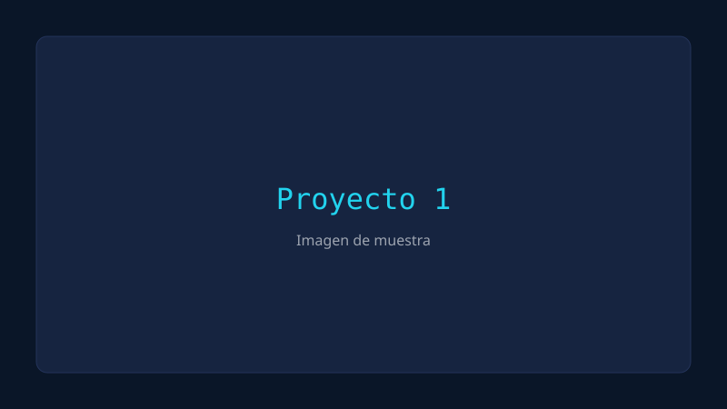
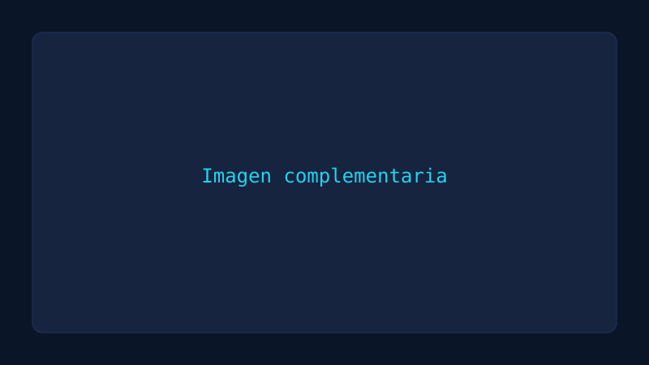

Proyecto 1


Descripción
Descripción detallada del primer proyecto. Explica el contexto, el problema que resuelve y su funcionamiento general.
Objetivo
Objetivo principal del proyecto y qué se buscaba lograr.
Solución
Cómo se implementó la solución, decisiones técnicas y herramientas utilizadas.
Aprendizajes
Lo aprendido durante el desarrollo y posibles mejoras futuras.
Bitácora
Mis notas personales y reflexiones durante el desarrollo.